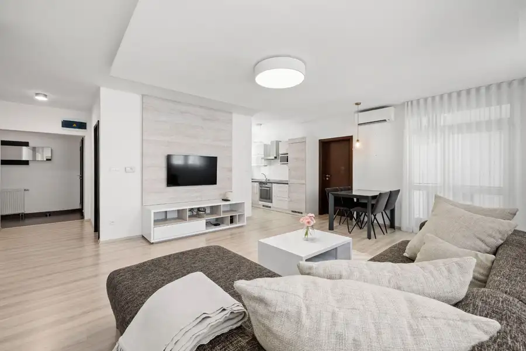

2-izbový byt v pokojnej lokalite, Ľubovníková ul., Devínska Nová Ves
Devínska Nová Ves, Bratislava
- Dispozícia2-izbový
- Plocha57.46 m²
- Poschodie2. z 3
- Stavpo rekonštrukcii
- Vlastníctvoosobné
- Energetická triedaA
O nehnuteľnosti
Hľadáte bývanie, ktoré spája absolútny pokoj, praktickú dispozíciu a výbornú dostupnosť? Spoločnosť
NUERA
Vám ponúka na predaj skvele riešený 2-izbový byt v tichej lokalite na
Ľubovníkovej ulici v Devínskej Novej Vsi.
Byt je orientovaný juhovýchodne do tichého vnútrobloku a nachádza sa v nízkopodlažnej bytovke s rodinnou atmosférou a malým počtom susedov.
Tento byt predstavuje nielen skvelé štartovacie bývanie, ale vďaka bezprostrednej blízkosti závodu Volkswagen ide aj o zaujímavú investičnú príležitosť s vysokým potenciálom na prenájom.
ZÁKLADNÉ PARAMETRE:
•
Podlahová plocha bytu: 54 m²
•
Hlboký balkón: 4,73 m²
(ideálny na pohodlné posedenie a relax)
•
Priestranný príručný sklad: 3,46 m²
(veľkorysý pomocník na odkladanie vecí priamo v dome)
• Poschodie: 2. poschodie (z 3) v nízkopodlažnom bytovom dome bez výťahu
• Stav: Dobrý, udržiavaný a s láskou bývaný stav
• Vykurovanie:
Vlastný kotol
(maximálna kontrola nad nákladmi a teplom)
DISPOZÍCIA A VYBAVENIE BYTU:
Byt prekvapí premysleným usporiadaním s dostatkom úložného priestoru:
• Vstupná hala so vstavaným šatníkom.
• Priestranná denná časť, ktorá spája obývací priestor s kuchynským a jedálenským kútom. Táto časť je klimatizovaná, čo zabezpečí komfort počas letných dní.
• Výstup na balkón priamo z dennej zóny.
• Samostatná spálňa so vstavaným šatníkom.
• Kúpeľňa a oddelené WC pre vyšší komfort bývania.
NÍZKE MESAČNÉ NÁKLADY (Spolu
172€
):
Vďaka vlastnému vykurovaniu má byt nízke prevádzkové náklady:
• Správa bytového domu: 106€
• Elektrina: 36€
• Plyn: 30€
KONEKTIVITA:
• V bytovom dome je k dispozícii vysokorýchlostný optický internet a TV od popredných poskytovateľov Telekom a Orange
TOP 4 SILNÉ STRÁNKY NEHNUTEĽNOSTI:
1. Poloha a prostredie: Pokojná lokalita plná zelene s bezprostrednou blízkosťou Volkswagenu a rýchlym napojením na MHD.
2. Komfortný bytový dom: Nízkopodlažný dom s minimom susedov zaručuje súkromie a pokoj. Byt má veľmi praktickú a kompaktnú dispozíciu.
3. Prémiové bonusy: Klimatizácia, hlboký balkón do vnútrobloku, vlastný kotol a veľký sklad.
4. Bezproblémové parkovanie: V okolí bytového domu je k dispozícii dostatok parkovacích možností.
LOKALITA A DOSTUPNOSŤ:
Ľubovníková ulica ponúka to najlepšie z Devínskej Novej Vsi – bývanie v obklopení prírody (lesy, cyklotrasy, Morava) a zároveň perfektné mestské spojenie.
Kúsok od domu sa nachádza zastávka MHD, odkiaľ premáva priamy autobusový spoj (linka 21) priamo na Autobusovú stanicu Nivy a do centra mesta. Okolie poskytuje kompletnú občiansku vybavenosť (Obchodné centrum Bory Mall so širokou ponukou obchodov a služieb, školy, zdravotné stredisko a kompletná infraštruktúra Devínskej Novej Vsi).
Príďte sa presvedčiť o skvelej atmosfére tohto bytu osobne. Tešíme sa na vás na obhliadke!
Parametre
| Balkón | áno |
|---|---|
| Celková rozloha | 62.19 m² |
| Dátum zverejnenia | 5. 10. 2026 |
| Energetický certifikát | A |
| Garáž | nie |
| Internet | optika |
| Klimatizácia | áno |
| Káblová televízia | áno |
| Kúpeľňa | vaňa |
| Okná | plastové |
| Orientácia | juhovýchodná |
| Parkovanie | vonkajšie |
| Pivnica | áno |
| Poschodie | 2/vyššie poschodie |
| Postavené z | Zmiešané |
| Počet izieb | 2 |
| Počet poschodí | 3 |
| Stav | po rekonštrukcii |
| Vlastníctvo | osobné |
| Vykurovanie | vlastné - plyn |
| Výťah | nie |
| Zariadenie | zariadený |
| Úžitková plocha | 57.46 m² |
Kde to je
Mohlo by Vás zaujímať
 Byt7
349 000 €DOWNTOWN YARDS - 2i byt do vnútrobloku, blok A
Nivy, Bratislava
2-izbový55.41 m²6. podlažie
NUERA Real Estate, exkluzívny partner developera JTRE, Vám ponúka na predaj moderné bývanie v srdci bratislavského downtownu – Projekt Downtown…
Byt7
349 000 €DOWNTOWN YARDS - 2i byt do vnútrobloku, blok A
Nivy, Bratislava
2-izbový55.41 m²6. podlažie
NUERA Real Estate, exkluzívny partner developera JTRE, Vám ponúka na predaj moderné bývanie v srdci bratislavského downtownu – Projekt Downtown…

BytNové10 249 000 €Priestranný 2 izbový byt, Agátova ul., Dúbravka Dúbravka, Bratislava 2-izbový64.43 m²5. podlažie Hľadáte vzdušné bývanie s funkčnou dispozíciou, dostatkom úložného priestoru a pokojným výhľadom? Tento skvele udržiavaný 2-izbový byt na Agátovej…